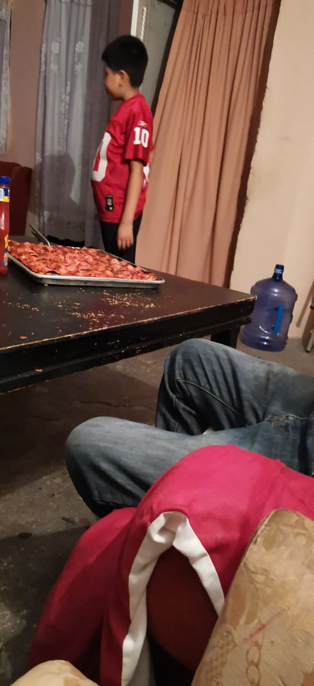
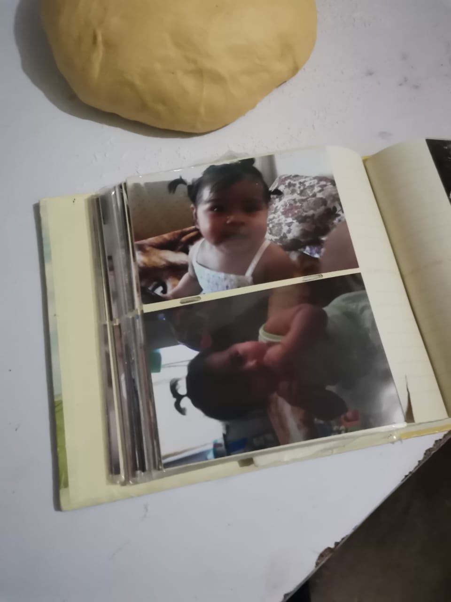
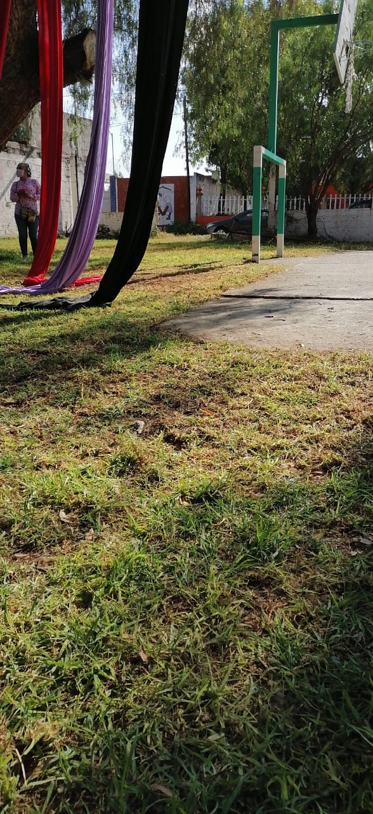

Actividades realizadas
Durante el periodo de aislamiento que dio inicio a partir del mes de Marzo del presente año debido al virus
del Covid-19 , mi familia ha hecho multiples actividades que no pudimos hacer anteriormente debido a que teniamos otras ocupaciones  (trabajo,escuela,etc.).Los cuales se enlistan a continuación.
(trabajo,escuela,etc.).Los cuales se enlistan a continuación.
- Salir a caminar:
Los fines de semana saliamos a caminar por un camino lleno de arboles que estaba muy cerca de mi casa para relajarnos y tomar un poco de aire fresco
- Probar nuevas recetas:
Los fines de semana tratabamos de aprender a cocinar nuevas cosas, por ejemplo , algunas veces haciamos pizza , o postres como pasteles , gelatinas ,etc. De igual manera fue muy divertido y concidero que aprendimos un poco todos
- Recordar buenos momentos a tráves de fotos:
Cuando nos pusimos a limpiar nuestra casa y acomodar todo en su lugar , encontramos muchas fotos de antaño en donde quedaron capturados buenos momentos. Por lo que nos sentabamos en el comedor a recordar todo ellos
- Realizar un deporte:
Muchas veces jugabamos futbol o basquet en el patio de mi casa con toda mi familia era muy divertido y además era muy bueno , ya que nos ejercitabamos y disfrutabamos de un buen momento en familia
¿Qué tan frecuente realizamos esas actividades?
Para representar la frecuencia a la que realizamos cada actividad ,se realizó la siguiente tabla.
| Actividad | Veces realizado desde Marzo a Agosto | Fotografia |
|---|---|---|
| Salir a caminar | 3 veces por semana(84 veces en total) | |
| Probar nuevas recetas | una vez a la semana (24 veces en total) |  |
| Recordar buenos momentos a tráves de fotos | No lo haciamos frecuentemente , (3 veces aprocimadamente) |  |
| Realizar un deporte | 2 a 3 veces por semana (77 veces en total) |  |